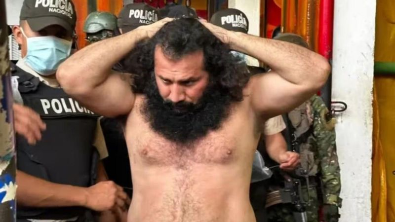
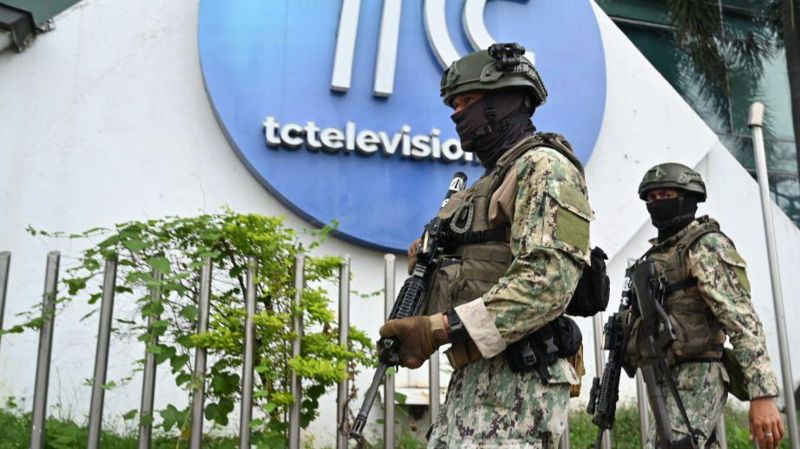

Internacional
El presidente Daniel Noboa declara la existencia de un "conflicto armado interno" en Ecuador y ordena al Ejército restablecer el orden tras varios atentados y la toma de un canal de TV

El presidente de Ecuador, Daniel Noboa, declaró este martes la existencia de un Conflicto Armado Interno y ordenó al Ejército restablecer el orden en las calles del país. La declaración llegó minutos después de que se supiera que un grupo de delincuentes había irrumpido en un canal de televisión en Guayaquil durante una transmisión en vivo. “He ordenado a las Fuerzas Armadas ejecutar operaciones militares para neutralizar a estos grupos”, dijo el mandatario. “He firmado el decreto ejecutivo declarando Conflicto Armado Interno e identifiqué a los siguientes grupos del crimen organizado transnacional como organizaciones terroristas y actores no estatales beligerantes: Águilas, ÁguilasKiller, Ak47, Caballeros Oscuros, ChoneKiller, Choneros, Covicheros, Cuartel de las Feas, Cubanos, Fatales, Gánster, Kater Piler, Lagartos, Latin Kings, Lobos, Los p.27, Los Tiburones, Mafia 18, Mafia Trébol, Patrones, R7, Tiguerones”, escribió Noboa en su cuenta de la red social X. La declaratoria de conflicto interno se produce un día después de que el propio Noboa decretara un estado de excepción por 60 días en todo Ecuador por la grave crisis carcelaria y de seguridad que se vive el país.
Quién es Adolfo Macías, "Fito", cuya fuga de una prisión en Ecuador llevó al presidente Noboa a declarar el estado de excepción en el país
Es el jefe de la banda Los Choneros, considerada una de las facciones criminales más peligrosas de Ecuador, y no es la primera vez que se fuga. Adolfo Macías, alias “Fito”, ya no duerme en su celda de la cárcel del Litoral de Guayaquil en la que estaba pagando una condena de 34 años desde el 2011 por delincuencia organizada, narcotráfico y asesinato. Según la prensa local, el domingo, justo antes de que el ejército fuera a buscarlo para trasladarlo a una prisión de máxima seguridad, el reo de 44 años se desvaneció. Más de 3.000 uniformados lo buscaron sin éxito en los tejados y hasta en las alcantarillas del penal. Las autoridades tardaron en reconocer la fuga y en un principio se barajó la posibilidad de que “Fito” se hubiera escondido dentro de la misma prisión, de la que Los Choneros tiene el control. En un comunicado el SNAI, la institución del Gobierno responsable de lo que ocurre en las cárceles, anunció que puso una denuncia por la "presunta evasión" de Macías.
3 claves que explican el “conflicto armado interno” declarado en Ecuador tras varias jornadas de violencia
Ecuador está inmerso en un "conflicto armado interno", según declaró este martes su presidente, Daniel Noboa. El mandatario ordenó a las fuerzas militares restablecer el orden en las calles, después de que hombres armados irrumpieran en el canal de televisión TC de Guayaquil, y tomaran como rehenes a su personal durante una transmisión en directo. A este incidente se sumaron incursiones de grupos armados en universidades y otras instituciones públicas, así como saqueos en Quito. Esto se produjo luego de que el presidente declarara el estado de excepción el lunes al producirse graves episodios violentos en seis cárceles, con secuestros de policías y las fugas de los líderes de dos grandes bandas delictivas. BBC Mundo repasa tres claves que ayudan a entender la grave crisis de violencia e inseguridad que vive hoy Ecuador.
🔴 ÚLTIMO | #EcuadorBajoAtaque#TCTelevisión emite pronunciamiento donde deja en claro que lo vivido hoy en sus instalaciones no se trató de delincuencia, sino de terrorismo. pic.twitter.com/aJWFlhiYKw
— 📢YO PEDRO 🚨 (@elorwelliano) January 10, 2024
La crisis de violencia que padece Ecuador se recrudeció este martes con una jornada caótica que llevó al presidente, Daniel Noboa, a tomar la inédita decisión de declarar la existencia de un "conflicto armado interno" en el país. Grupos criminales perpetraron secuestros de policías, colocaron explosivos en distintas ciudades del país e irrumpieron en un canal de televisión durante un programa en vivo. En el incidente del canal TC de Guayaquil los criminales -en su mayoria encapuchados- amenazaron con armas al personal de la televisora. En las imágenes, que fueron transmitidas a las 2:00 p.m. hora local, también se ve a los atacantes con lo que parecerían ser explosivos, mientras obligan a los empleados a permanecer en el suelo.